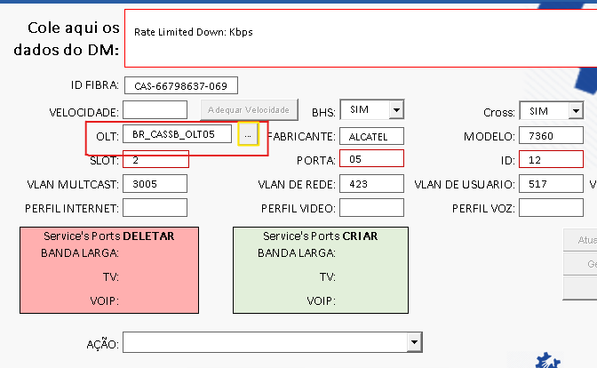

Como verificar alarme via Putty

Como converter Slot e Porta para Cabo e Primária via Sigres

Com a informação do alarme, é possível converter para cabo e primário dentro do próprio helper, clicando nos três pontos ao lado da olt.
Dentro desta aba no primeiro campo que aparece, está presente todas as OLT da região do cliente, onde o GPON pode estar alarmando. Se não for encontrado o alarme na primeira OLT, deve-se procurar em todas as outras. É necessário se atentar a fabricante e ao modelo que é mostrado após a OLT, pois, os comandos mudam entre Huawei, Alcatel 7342 e Alcatel 7320/7360 em caso que prefira busacar o alarme via Putty.
Será solicitado que preencha com a OLT que alarmou no campo "Equipamento", e com o Slot e Porta logo abaixo, em seguida será mostrado a facilidade alarmada, como no exemplo: Cabo 01 Primário 19.
Após isso, basta informar o técnico qual o cabo e primária que está alarmando o GPON e então solicitar que entre em contato com a skill de manobra.